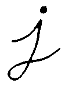

Eroding and Dilating¶
Goal¶
In this tutorial you will learn how to:
Cool Theory¶
Note
The explanation below belongs to the book Learning OpenCV by Bradski and Kaehler.
Morphological Operations¶
In short: A set of operations that process images based on shapes. Morphological operations apply a structuring element to an input image and generate an output image.
The most basic morphological operations are two: Erosion and Dilation. They have a wide array of uses, i.e. :
- Removing noise
- Isolation of individual elements and joining disparate elements in an image.
- Finding of intensity bumps or holes in an image
We will explain dilation and erosion briefly, using the following image as an example:

Dilation¶
This operations consists of convoluting an image
 with some kernel (
with some kernel ( ), which can have any shape or size, usually a square or circle.
), which can have any shape or size, usually a square or circle.The kernel
has a defined anchor point, usually being the center of the kernel.As the kernel
 is scanned over the image, we compute the maximal pixel value overlapped by and replace the image pixel in the anchor point position with that maximal value. As you can deduce, this maximizing operation causes bright regions within an image to “grow” (therefore the name dilation). Take as an example the image above. Applying dilation we can get:
The background (bright) dilates around the black regions of the letter.
To better grasp the idea and avoid possible confusion, in this another example we have inverted the original image such as the object in white is now the letter. We have performed two dilatations with a rectangular structuring element of size  .
.

The dilatation makes the object in white bigger.
Erosion¶
This operation is the sister of dilation. What this does is to compute a local minimum over the area of the kernel.
As the kernel
is scanned over the image, we compute the minimal pixel value overlapped by and replace the image pixel under the anchor point with that minimal value.Analagously to the example for dilation, we can apply the erosion operator to the original image (shown above). You can see in the result below that the bright areas of the image (the background, apparently), get thinner, whereas the dark zones (the “writing”( gets bigger.

In the same manner, the corresponding image resulting of the erosion operation on the inverted original image (two erosions with a rectangular structuring element of size .

The erosion makes the object in white smaller.
Code¶
This tutorial code’s is shown lines below. You can also download it from here
#include "opencv2/imgproc/imgproc.hpp"
#include "opencv2/highgui/highgui.hpp"
#include "highgui.h"
#include <stdlib.h>
#include <stdio.h>
using namespace cv;
/// Global variables
Mat src, erosion_dst, dilation_dst;
int erosion_elem = 0;
int erosion_size = 0;
int dilation_elem = 0;
int dilation_size = 0;
int const max_elem = 2;
int const max_kernel_size = 21;
/** Function Headers */
void Erosion( int, void* );
void Dilation( int, void* );
/** @function main */
int main( int argc, char** argv )
{
/// Load an image
src = imread( argv[1] );
if( !src.data )
{ return -1; }
/// Create windows
namedWindow( "Erosion Demo", CV_WINDOW_AUTOSIZE );
namedWindow( "Dilation Demo", CV_WINDOW_AUTOSIZE );
cvMoveWindow( "Dilation Demo", src.cols, 0 );
/// Create Erosion Trackbar
createTrackbar( "Element:\n 0: Rect \n 1: Cross \n 2: Ellipse", "Erosion Demo",
&erosion_elem, max_elem,
Erosion );
createTrackbar( "Kernel size:\n 2n +1", "Erosion Demo",
&erosion_size, max_kernel_size,
Erosion );
/// Create Dilation Trackbar
createTrackbar( "Element:\n 0: Rect \n 1: Cross \n 2: Ellipse", "Dilation Demo",
&dilation_elem, max_elem,
Dilation );
createTrackbar( "Kernel size:\n 2n +1", "Dilation Demo",
&dilation_size, max_kernel_size,
Dilation );
/// Default start
Erosion( 0, 0 );
Dilation( 0, 0 );
waitKey(0);
return 0;
}
/** @function Erosion */
void Erosion( int, void* )
{
int erosion_type;
if( erosion_elem == 0 ){ erosion_type = MORPH_RECT; }
else if( erosion_elem == 1 ){ erosion_type = MORPH_CROSS; }
else if( erosion_elem == 2) { erosion_type = MORPH_ELLIPSE; }
Mat element = getStructuringElement( erosion_type,
Size( 2*erosion_size + 1, 2*erosion_size+1 ),
Point( erosion_size, erosion_size ) );
/// Apply the erosion operation
erode( src, erosion_dst, element );
imshow( "Erosion Demo", erosion_dst );
}
/** @function Dilation */
void Dilation( int, void* )
{
int dilation_type;
if( dilation_elem == 0 ){ dilation_type = MORPH_RECT; }
else if( dilation_elem == 1 ){ dilation_type = MORPH_CROSS; }
else if( dilation_elem == 2) { dilation_type = MORPH_ELLIPSE; }
Mat element = getStructuringElement( dilation_type,
Size( 2*dilation_size + 1, 2*dilation_size+1 ),
Point( dilation_size, dilation_size ) );
/// Apply the dilation operation
dilate( src, dilation_dst, element );
imshow( "Dilation Demo", dilation_dst );
}
Explanation¶
Most of the stuff shown is known by you (if you have any doubt, please refer to the tutorials in previous sections). Let’s check the general structure of the program:
- Load an image (can be BGR or grayscale)
- Create two windows (one for dilation output, the other for erosion)
- Create a set of 02 Trackbars for each operation:
- The first trackbar “Element” returns either erosion_elem or dilation_elem
- The second trackbar “Kernel size” return erosion_size or dilation_size for the corresponding operation.
- Every time we move any slider, the user’s function Erosion or Dilation will be called and it will update the output image based on the current trackbar values.
Let’s analyze these two functions:
erosion:
/** @function Erosion */ void Erosion( int, void* ) { int erosion_type; if( erosion_elem == 0 ){ erosion_type = MORPH_RECT; } else if( erosion_elem == 1 ){ erosion_type = MORPH_CROSS; } else if( erosion_elem == 2) { erosion_type = MORPH_ELLIPSE; } Mat element = getStructuringElement( erosion_type, Size( 2*erosion_size + 1, 2*erosion_size+1 ), Point( erosion_size, erosion_size ) ); /// Apply the erosion operation erode( src, erosion_dst, element ); imshow( "Erosion Demo", erosion_dst ); }
The function that performs the erosion operation is erode. As we can see, it receives three arguments:
src: The source image
erosion_dst: The output image
element: This is the kernel we will use to perform the operation. If we do not specify, the default is a simple
matrix. Otherwise, we can specify its shape. For this, we need to use the function getStructuringElement:Mat element = getStructuringElement( erosion_type, Size( 2*erosion_size + 1, 2*erosion_size+1 ), Point( erosion_size, erosion_size ) );
We can choose any of three shapes for our kernel:
- Rectangular box: MORPH_RECT
- Cross: MORPH_CROSS
- Ellipse: MORPH_ELLIPSE
Then, we just have to specify the size of our kernel and the anchor point. If not specified, it is assumed to be in the center.
That is all. We are ready to perform the erosion of our image.
Note
Additionally, there is another parameter that allows you to perform multiple erosions (iterations) at once. We are not using it in this simple tutorial, though. You can check out the Reference for more details.
dilation:
The code is below. As you can see, it is completely similar to the snippet of code for erosion. Here we also have the option of defining our kernel, its anchor point and the size of the operator to be used.
/** @function Dilation */
void Dilation( int, void* )
{
int dilation_type;
if( dilation_elem == 0 ){ dilation_type = MORPH_RECT; }
else if( dilation_elem == 1 ){ dilation_type = MORPH_CROSS; }
else if( dilation_elem == 2) { dilation_type = MORPH_ELLIPSE; }
Mat element = getStructuringElement( dilation_type,
Size( 2*dilation_size + 1, 2*dilation_size+1 ),
Point( dilation_size, dilation_size ) );
/// Apply the dilation operation
dilate( src, dilation_dst, element );
imshow( "Dilation Demo", dilation_dst );
}
Results¶
Compile the code above and execute it with an image as argument. For instance, using this image:

We get the results below. Varying the indices in the Trackbars give different output images, naturally. Try them out! You can even try to add a third Trackbar to control the number of iterations.

Help and Feedback
You did not find what you were looking for?- Ask a question on the Q&A forum.
- If you think something is missing or wrong in the documentation, please file a bug report.

Table Of Contents
Previous topic
Next topic
More Morphology Transformations